9. Chat 테스트 하기
Amazon Connect 는 기본 기능으로 Chat 을 지원합니다. Chat 을 테스트 하기 위해서는 Amazon Connect Console 에서 바로 테스트 해볼 수 있습니다. 또한, 기본 적인 UX 를 Javascript 코드로 제공하므로 여러분의 웹사이트에 쉽게 적용할 수 있습니다. 여기에서는 Chat 기능을 테스트 하고 Javascript 코드를 받는 방법을 알아봅니다.
Chat 테스트 하기
- Connect Console 에 접속합니다. 첫화면에서 Test chat 항목을 클릭합니다.
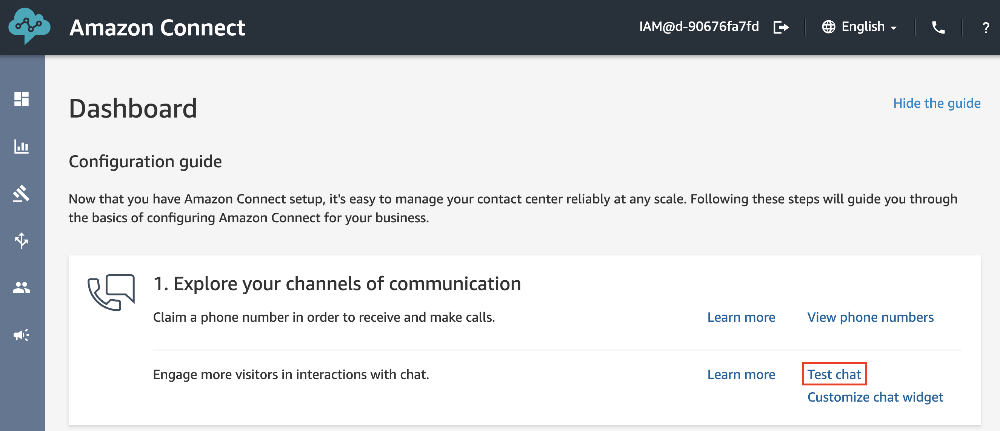
- Activate the Contact Control Panel 을 클릭하여 CCP (Contact Control Panel)을 활성화합니다.
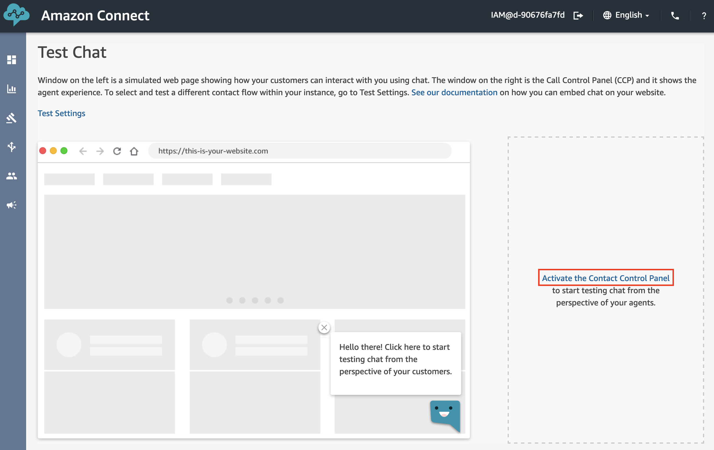
- CCP 의 왼족 상단의 드롭다운 메뉴를 통해 상담원의 상태를 Available 로 전환합니다. Chat 또는 Voice call 을 받을 수 있는 상태로 변경이 됩니다.
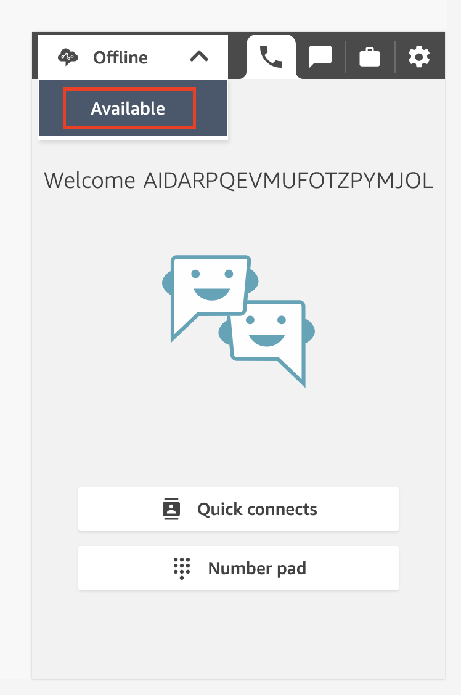
- 하단의 Chat 아이콘을 클릭합니다. Chat 아이콘을 기준으로 왼쪽 화면은 콜센터 고객의 웹사이트 화면이라고 볼 수 있습니다. 오른쪽 화면은 상담사의 소프트폰 화면이라고 볼 수 있습니다.
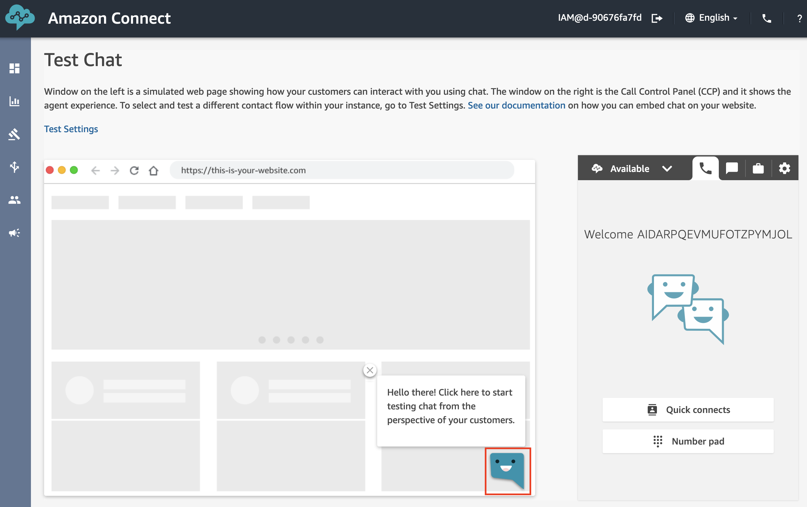
- 왼쪽의 Chat 화면을 통해 대화를 시작하면 상담원에게 신호가 가게 됩니다. 상담원은 CCP 의 Accept chat 버튼을 클릭해 Chat 상담을 시작할 수 있습니다.
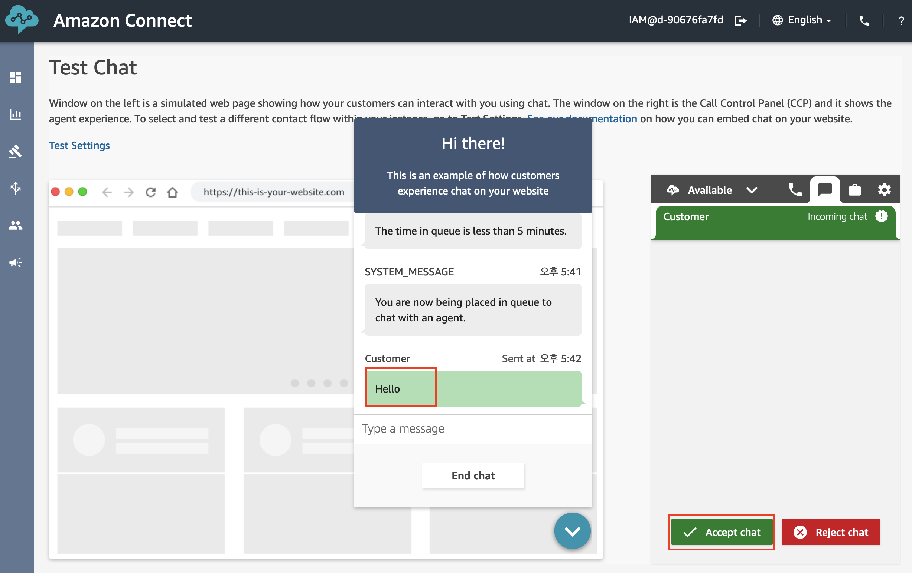
Chat 설정 변경해보기
- 새로운 탭을 열어, Connect Console에서 Contact flow 메뉴로 이동합니다.
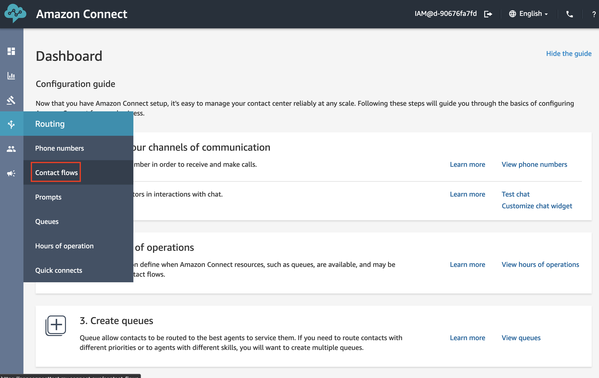
- Sample disconnect flow 를 선택합니다. Sample disconnect flow 는 통화 종료 후 (상담원이 통화를 종료한 이후)의 시나리오를 정의할 수 있습니다. 그러므로 Chat 을 종료했던 고객이 다시 재개할 경우 동작을 정의할 수도 있습니다.
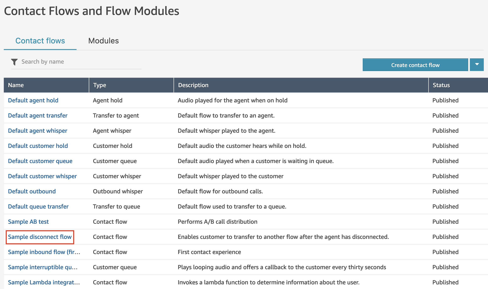
- Wait Command block 을 클릭하여 설정합니다. Wait Command block 은 Chat 세션을 얼마나 길게 유지할지 설정 할 수 있습니다. 또한, 세션 만료 시간내에 고객이 Chat을 재개했을 경우와 세션 만료 시간 이후에 접속했을 경우를 분기하여 메시지를 다르게 전송하는 등의 시나리오 분기가 가능합니다.
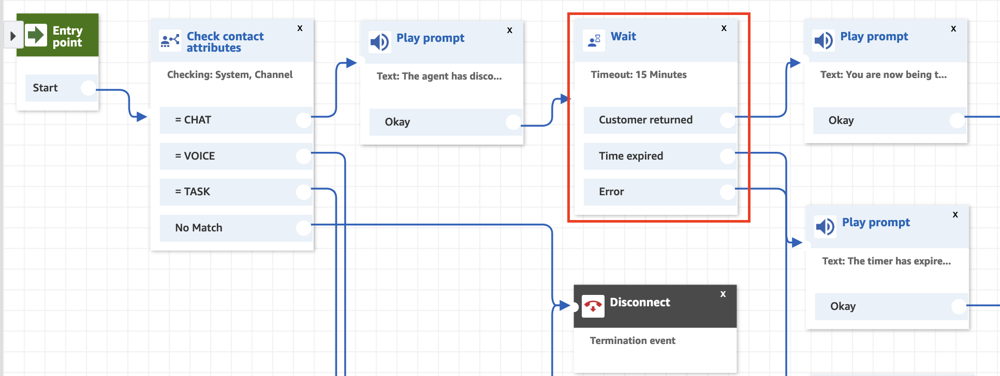
- 아래와 같이 세션 유지 시간을 변경할 수 있습니다. 세션 유지 시간을 변경하여 분기를 테스트 해보실 수 있습니다.
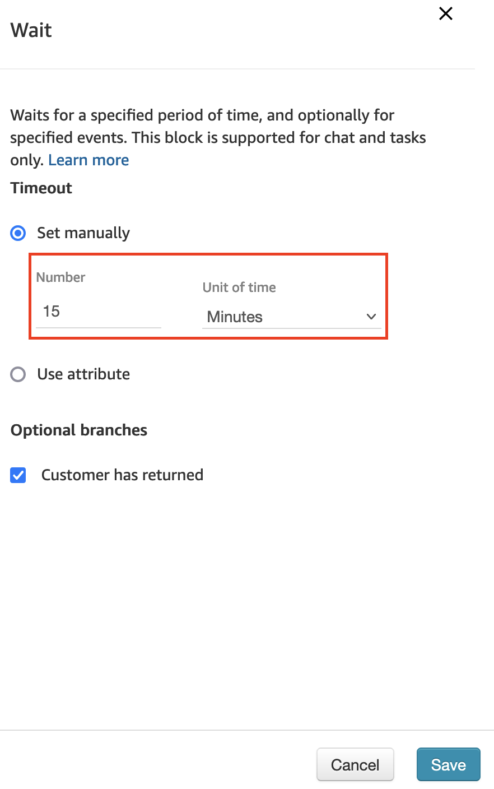
- 다시 Contact flow 메뉴로 이동하여, Sample inbound flow Contact flow 를 선택합니다.
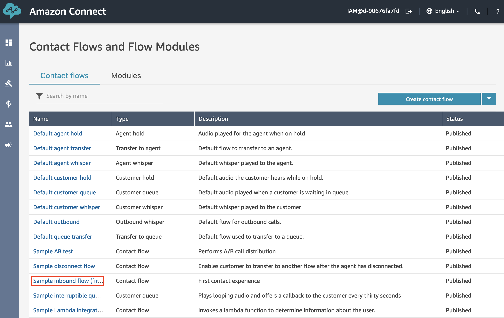
- 현재 Chat 테스트는 Sample inbound flow 로 진입하도록 설정되어 있습니다. 아래 화면과 같이 Set disconnect flow Command block 을 통해, 상담원이 통화를 종료한 직후 위에서 설정한 Set disconnect flow 가 실행이 되게 됩니다.
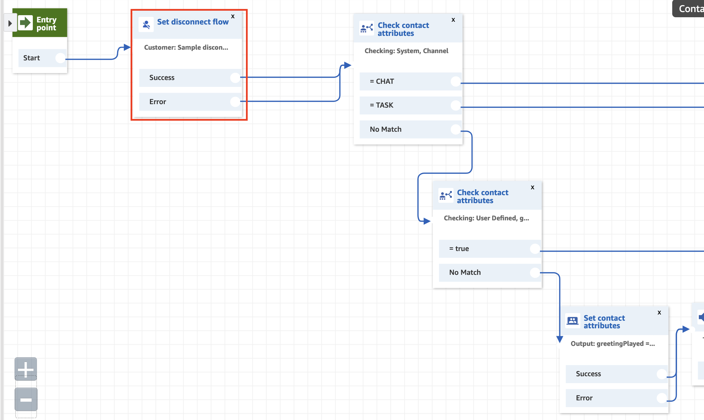
- Set disconnect flow Command block 을 클릭하면, 아래와 같이 다른 Contact flow 를 Disconnect flow 로 설정할 수 있습니다.
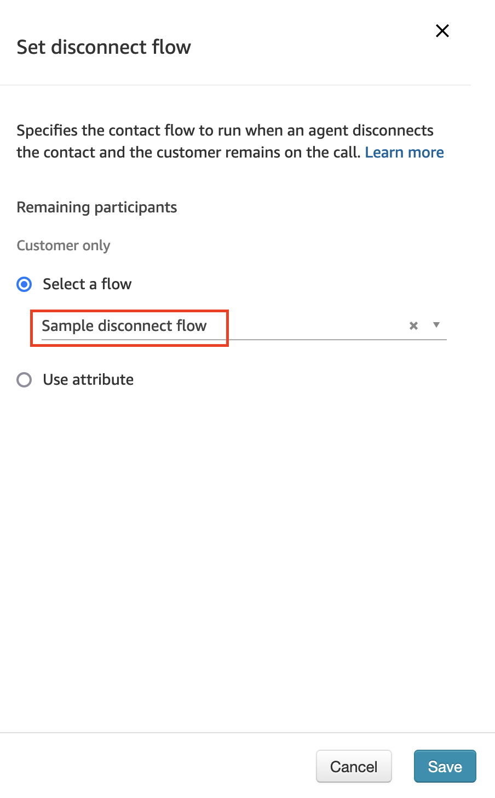
- 다시 Test chat 화면으로 돌아와서 Test settings 항목을 클릭합니다.
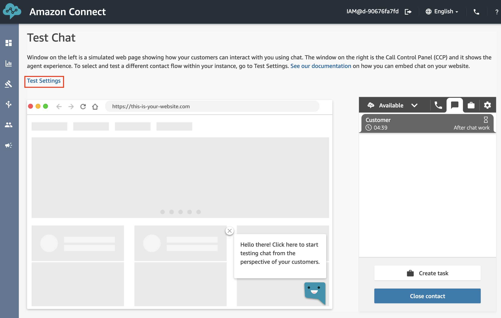
- 여기에서는 현재 Chat 테스트 화면의 설정을 변경할 수 있습니다. 특히 진입시의 시나리오를 담당할 Contact flow 를 지정할 수 있습니다. 위에서 살펴본대로 현재 Sample inbound flow 가 설정되어 있는 것을 확인할 수 있습니다.
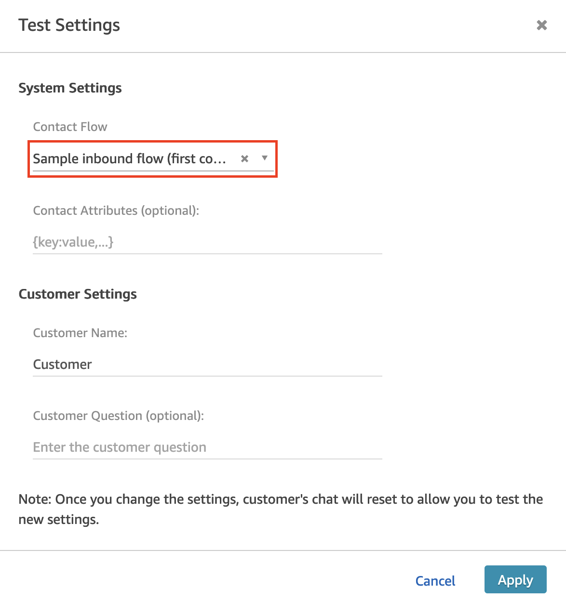